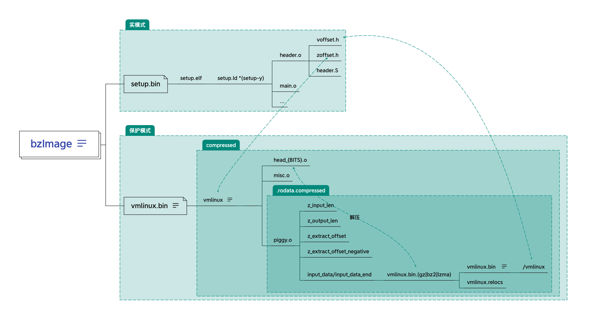

Linux 映像结构 编译完的 Linux 映像文件有几种，bzImage、Image以及zImage和uImage。可以从 makefile 分析他们的区别。
Image x86 下的 makefile 没有找到 Image 的生成规则。arch/arm/boot/Makefile 下有 Image 镜像的生成规则
1 2 3 4 5 6 7 8 9 10 11 12 13 14 15 OBJCOPYFLAGS :=-O binary -R .comment -S $(obj) /Image: vmlinux FORCE $(call if_changed,objcopy) if_changed = $(if $(strip $(any-prereq) $(arg-check)), \ @set -e; \ $(echo-cmd) $(cmd_$(1)); \ printf '%s\n' 'cmd_$@ := $(make-cmd)' > $(dot-target).cmd, @:) cmd_objcopy = $(OBJCOPY) $(OBJCOPYFLAGS) $(OBJCOPYFLAGS_$(@F)) $< $@
if_changed 是一个函数，其定义在 scripts/Kbuild.include, 其会调用 cmd_$(1) 这里就是 cmd_objcopy 命令，cmd_objcopy 命令定义在 scripts/Makefile.lib。串联上面的来看，Image 就是 由 vmlinux 通过 objcopy 生成的。
zImage x86 下的 makefile 同样没有找到 zImage 的生成规则。参照 arch/arm/boot/Makefile 的 zImage 镜像的生成规则
1 2 3 4 5 6 7 8 9 10 11 12 13 14 15 16 17 18 19 20 21 22 23 24 25 26 27 28 29 30 31 OBJCOPYFLAGS :=-O binary -R .comment -S $(obj) /zImage: $(obj) /compressed/vmlinux FORCE $(call if_changed,objcopy) $(obj) /vmlinux: $(obj) /vmlinux.lds $(obj) /$(HEAD) $(obj) /piggy.o \ $(addprefix $(obj) /, $(OBJS) ) $(lib1funcs) $(ashldi3) \ $(bswapsdi2) $(efi-obj-y) FORCE @$(check_for_multiple_zreladdr) $(call if_changed,ld) @$(check_for_bad_syms) $(obj) /piggy_data: $(obj) /../Image FORCE $(call if_changed,$(compress-y) ) $(obj) /piggy.o: $(obj) /piggy_dataquiet_cmd_lzma = LZMA $@ cmd_lzma = (cat $(filter -out FORCE,$^ ) | \ lzma -9 && $(call size_append, $(filter -out FORCE,$^ ) )) > $@ || \ (rm -f $@ ; false) quiet_cmd_gzip = GZIP $@ cmd_gzip = (cat $(filter -out FORCE,$^ ) | gzip -n -f -9 > $@ ) || \ (rm -f $@ ; false)
piggy.S
1 2 3 4 5 6 7 /* SPDX-License-Identifier: GPL-2.0 */ .section .piggydata,#alloc .globl input_data input_data: .incbin "arch/arm/boot/compressed/piggy_data" .globl input_data_end input_data_end:
zImage 同样是经过 objcopy 而来，不同于 Image 的是，zImage 的 objcopy 对象来自于 compressed/vmlinux。compressed/vmlinux 由几个文件链接而来，其中一个是piggy.o，从 makefile 来看 piggy.o 依赖的 piggy_data 就是由 Image 压缩而来，piggy.S 的代码非常简单，使用 incbin 包含了压缩的 Image。因此 zImage 可以理解为压缩的内核映像文件。压缩算法取决于 $(compress-y)，这个可以取决于具体的配置，Makefile.lib 中内置了很多压缩算法，LZMA、GZIP、LZ4等。
uImage uImage 来自于 zImage，U-boot专用的映像文件（不太熟悉，略过）。
1 2 3 $(obj) /uImage: $(obj) /zImage FORCE @$(check_for_multiple_loadaddr) $(call if_changed,uimage)
bzImage 目前版本（Kernel-2.6及之后）下 x86 的 makefile 只有一种 bzImage。
bz表示“big zImage”，不是用bzip2压缩的，字面意思上就能看出 bzImage 相对于 zImage 要大，这也是 Linux 代码量不断增大的结果，4.19 的内核使用 defconfig 编译完大概为 8M 左右。以前的 Image 和 zImage 最终会放到内存 1MB 以下，bzImage 太大了显然放不下，所以其保护模式代码是放在 1MB 以上的。
bzImage 的生成 bzImage 是 x86 下 Linux 编译生成的最终文件，下面从 makefile 入手，分析 bzImage 的组成以及生成过程。
通常我们编译完内核的最终输出是这样的：
1 2 3 4 5 Setup is 15740 bytes (padded to 15872 bytes). System is 8389 kB CRC 1e5f0610 Kernel: arch/x86/boot/bzImage is ready (
实际上这几行输出就来自于下面这几行 makefile
1 2 3 4 5 6 7 8 9 quiet_cmd_image = BUILD $@ silent_redirect_image = >/dev/null cmd_image = $(obj) /tools/build $(obj) /setup.bin $(obj) /vmlinux.bin \ $(obj) /zoffset.h $@ $($(quiet) redirect_image) $(obj) /bzImage: $(obj) /setup.bin $(obj) /vmlinux.bin $(obj) /tools/build FORCE $(call if_changed,image) @$(kecho) 'Kernel: $@ is ready' ' (
从这几行可以看出来 bzImage 的构建规则，其依赖的文件为 setup.bin、vmlinux.bin 以及 $(obj)/tools/build，构建规则为cmd_image。
命令的输入都比较直观，除了最后的$($(quiet)redirect_image)。但是其实我们不用自己推断参数，执行过 make 的内核源码树里面会有很多.xxx.cmd的文件，这个文件实际上来自于 if_changed 函数的输出，里面存储了所有调用if_changed 函数具体执行的命令，按照文件名规则，找到对应的文件为.bzImage.cmd:
1 2 3 4 cmd_arch/x86/boot/bzImage := arch/x86/boot/tools/build arch/x86/boot/setup.bin arch/x86/boot/vmlinux.bin arch/x86/boot/zoffset.h arch/x86/boot/bzImage tools/build setup.bin vmlinux.bin zoffset.h bzImage
可以看到实际上 bzImage 依赖于 setup.bin、vmlinux.bin 以及 zoffset.h 三个文件，下面先分析这三个文件的构成，再分析具体的 build 规则
setup.bin 熟悉 Linux 代码的对这个 setup 一定不会陌生，从 Linux 0.11 开始就有setup 的概念。当时的 Linux 引导过程是
bootsector.S -> setup.s -> head.S
bios 加载 bootsector 的代码到0x7c00，然后 bootsector 读取 setup 和 system 的代码到指定的位置，代码控制权移交给 setup。当时的 bootsector 充当 bootloader 的角色，setup 为 system 运行做环境的准备工作，head 是 system 的入口。
后来的 Linux(Kernel-2.6) 弃置了这种做法，直接 boot 会打印一行错误信息。此时的 bootloader 不一定需要嵌入在 Linux 中了，可以使用 Grub 等。话题偏了，引导协议这部分放到后面详细分析。
1 2 3 4 5 6 bugger_off_msg: .ascii "Direct booting from floppy is no longer supported.\r\n" .ascii "Please use a boot loader program instead.\r\n" .ascii "\n" .ascii "Remove disk and press any key to reboot . . .\r\n" .byte 0
言归正传，虽然引导方式发生了变换，但是 setup.bin 的功能应该还是完成一些系统初始化工作，只不过这个工作随着内核功能的增强也变得越来越复杂。我们从makefile来分析 setup.bin 的组成：
1 2 3 4 OBJCOPYFLAGS_setup.bin := -O binary $(obj) /setup.bin: $(obj) /setup.elf FORCE $(call if_changed,objcopy)
这几行也比较符合直觉，setup.bin 来自于 setup.elf，通过 objcopy 得来，具体的命令为.setup.bin.cmd
1 2 3 cmd_arch/x86/boot/setup.bin := objcopy -O binary arch/x86/boot/setup.elf arch/x86/boot/setup.bin
objcopy 可以拷贝目标的某一个段出来（-j）。从上面的注释可以看出 这里输出 objcopy 输出目标文件的二进制内存转储，实际上就是去掉了一些无用的段（debug、符号表等）。setup.elf 是静态链接的，所以只需要拷贝出会被加载到内存的段就可以减小 setup 的大小。
1 2 3 4 5 6 7 8 9 10 11 12 13 14 15 16 17 18 19 20 21 22 $ du -h setup.elf 144K setup.elf $ du -h setup.bin 16K setup.bin $ wc -c setup.bin 15740 setup.bin $ readelf -l setup.elf Elf 文件类型为 EXEC (可执行文件) Entry point 0x200 There are 2 program headers, starting at offset 52 程序头： Type Offset VirtAddr PhysAddr FileSiz MemSiz Flg Align LOAD 0x200000 0x00000000 0x00000000 0x03d7c 0x050c0 RWE 0x200000 GNU_STACK 0x000000 0x00000000 0x00000000 0x00000 0x00000 RWE 0x10 Section to Segment mapping: 段节... 00 .bstext .bsdata .header .entrytext .inittext .initdata .text .text.startup .text32 .rodata .eh_frame .videocards .data .signature .bss 01
setup.elf 中第一个 LOAD 段对应的FileSiz 为0x3d7c，刚好是setup.bin的大小。LOAD 段中对应的节基本上一一对应 setup.ld 中的节（.eh_frame是gcc编译时添加的，和栈回溯相关，.text.startup在asm-offsets.s文件中定义）。
setup.bin 来源于 setup.elf，下面继续分析 setup.elf。
1 2 3 4 5 6 7 8 9 10 11 12 13 14 15 16 17 18 19 20 setup-y += a20.o bioscall.o cmdline.o copy.o cpu.o cpuflags.o cpucheck.o setup-y += early_serial_console.o edd.o header.o main.o memory.o setup-y += pm.o pmjump.o printf.o regs.o string.o tty.o video.o setup-y += video-mode.o version.o setup-$(CONFIG_X86_APM_BOOT) += apm.o setup-y += video-vga.o setup-y += video-vesa.o setup-y += video-bios.o SETUP_OBJS = $(addprefix $(obj) /,$(setup-y) ) LDFLAGS_setup.elf := -m elf_i386 -T $(obj) /setup.elf: $(src) /setup.ld $(SETUP_OBJS) FORCE $(call if_changed,ld)
setup.elf 就是上面的 setup-y 指定的源文件，经过链接而成的 32 位 elf 文件，链接规则由 setup.ld 指定。
setup.elf 的分析可以参考 setup代码分析
vmlinux.bin vmlinux.bin 和 setup.bin 一样，是 vmlinux 通过 objcopy 得到的。
1 2 3 4 5 6 7 OBJCOPYFLAGS_vmlinux.bin := -O binary -R .note -R .comment -S $(obj) /vmlinux.bin: $(obj) /compressed/vmlinux FORCE $(call if_changed,objcopy) $(obj) /compressed/vmlinux: FORCE $(Q) $(MAKE) $(build) =$(obj) /compressed $@
从依赖链条来看，这里的 vmlinux 来自于 compressed 目录。makefile 会在需要 compressed/vmlinux 的时候去 compressed 子目录执行 make。子目录下的 make 规则如下
1 2 3 4 5 6 7 8 9 10 11 12 13 14 15 16 17 18 vmlinux-objs-y := $(obj) /vmlinux.lds $(obj) /head_$(BITS) .o $(obj) /misc.o \ $(obj) /string.o $(obj) /cmdline.o $(obj) /error.o \ $(obj) /piggy.o $(obj) /cpuflags.o vmlinux-objs-$(CONFIG_EARLY_PRINTK) += $(obj) /early_serial_console.o vmlinux-objs-$(CONFIG_RANDOMIZE_BASE) += $(obj) /kaslr.o ifdef CONFIG_X86_64 vmlinux-objs-$(CONFIG_RANDOMIZE_BASE) += $(obj) /kaslr_64.o vmlinux-objs-y += $(obj) /mem_encrypt.o vmlinux-objs-y += $(obj) /pgtable_64.o endif quiet_cmd_check-and-link-vmlinux = LD $@ cmd_check-and-link-vmlinux = $(cmd_check_data_rel) ; $(cmd_ld) $(obj) /vmlinux: $(vmlinux-objs-y) FORCE $(call if_changed,check-and -link-vmlinux)
分析以上这一小段的代码，$(obj)/vmlinux 来自于 $(vmlinux-objs-y)，可以看到全是一些 .o 文件，这些 .o 显然是来自于 compressed 目录下对应的 .c 或者 .S 文件，这些代码的细节放到另外的文章分析
从保护模式入口到start_kernel
需要注意的是源代码中是找不到 $(vmlinux-objs-y) 中 piggy.o 对应的源文件的，这个文件其实是在编译过程中动态生成的，makefile 中描述了 piggy.S 是由目录下的 mkpiggy 生成的，mkpiggy 由 mkpiggy.c 编译而成。
1 2 3 4 5 6 7 8 9 10 11 12 13 14 15 16 17 18 19 20 21 22 23 24 25 26 27 28 # arch/x86/boot/compressed/Makefile $(obj)/vmlinux.bin.gz: $(vmlinux.bin.all-y) FORCE $(call if_changed,gzip) $(obj)/vmlinux.bin.bz2: $(vmlinux.bin.all-y) FORCE $(call if_changed,bzip2) # ...... suffix-$(CONFIG_KERNEL_GZIP) := gz suffix-$(CONFIG_KERNEL_BZIP2) := bz2 # ...... quiet_cmd_mkpiggy = MKPIGGY $@ cmd_mkpiggy = $(obj)/mkpiggy $< > $@ || ( rm -f $@ ; false ) targets += piggy.S $(obj)/piggy.S: $(obj)/vmlinux.bin.$(suffix-y) $(obj)/mkpiggy FORCE $(call if_changed,mkpiggy) # piggy.S .section ".rodata..compressed","a",@progbits .globl z_input_len z_input_len = 8376869 .globl z_output_len z_output_len = 32767212 .globl input_data, input_data_end input_data: .incbin "arch/x86/boot/compressed/vmlinux.bin.gz" input_data_end:
至于为什么要这么做，其实看了以上的代码就很清晰了(为了篇幅略去了一些内容)。piggy.S 的主要任务就是使用 incbin 完整包含压缩后的 vmlinux（这里的vmlinux有所不同，下面会具体分析），取决于压缩算法的不同，incbin 包含的文件名也不同，所以就使用了动态生成 piggy.S 的方法，当确定了压缩算法之后再生成 piggy.S 的代码。
vmlinux.bin 部分已经分析完了，总结一下 vmlinux.bin 来自于 compressed/vmlinux，后者来自于 compressed 目录下的所有 .o 文件链接。
分析到这里，其实有两个疑问：
内核代码的重量级部分(fs、mm、driver这些)在哪体现的？
vmlinux.bin.gz 是啥？
这两个问题其实可以用一句话来回答：vmlinux.bin.gz 即包含了内核代码的重量级部分。
下面分析一下 vmlinux.bin.xx，揭开内核组成的最后一个部分。以 gzip 压缩的 vmlinux.bin.gz 为终点，分析一下其构成部分。
1 2 3 4 5 6 7 8 9 10 11 12 13 14 15 16 17 18 19 20 21 22 23 24 quiet_cmd_check-and-link-vmlinux = LD $@ cmd_check-and-link-vmlinux = $(cmd_check_data_rel) ; $(cmd_ld) $(obj) /vmlinux: $(vmlinux-objs-y) FORCE $(call if_changed,check-and -link-vmlinux) OBJCOPYFLAGS_vmlinux.bin := -R .comment -S $(obj) /vmlinux.bin: vmlinux FORCE $(call if_changed,objcopy) targets += $(patsubst $(obj) /%,%,$(vmlinux-objs-y) ) vmlinux.bin.all vmlinux.relocs CMD_RELOCS = arch/x86/tools/relocs quiet_cmd_relocs = RELOCS $@ cmd_relocs = $(CMD_RELOCS) $< > $@ ;$(CMD_RELOCS) --abs-relocs $< $(obj) /vmlinux.relocs: vmlinux FORCE $(call if_changed,relocs) vmlinux.bin.all-y := $(obj) /vmlinux.bin vmlinux.bin.all-$(CONFIG_X86_NEED_RELOCS) += $(obj) /vmlinux.relocs $(obj) /vmlinux.bin.gz: $(vmlinux.bin.all-y) FORCE $(call if_changed,gzip)
vmlinux.bin.gz 依赖于 vmlinux.bin.all-y， 而 vmlinux.bin.all-y 的定义是两个，一个是 $(obj)/vmlinux.bin，另一个取决于 CONFIG_X86_NEED_RELOCS 这个宏，应该是和重定位相关的，暂时不看。$(obj)/vmlinux.bin 这个有点饶，上面分析的也有一个 $(obj)/vmlinux.bin，实际上这里的 $(obj)/vmlinux.bin 指的是 compressed 下面的 vmlinux.bin，可以代入 $(obj) 展开就能发现区别了。$(obj)/vmlinux.bin 也是 vmlinux 通过 objcopy 得到的，但是这里的 vmlinux 是没有前缀的，其定义在顶层 makefile。
1 2 3 4 5 6 7 8 9 10 11 12 13 14 15 16 17 18 19 20 21 22 23 24 25 26 27 28 29 30 31 32 33 34 35 36 37 38 39 40 41 42 43 44 45 46 47 48 49 50 51 52 53 all: vmlinux ifeq ($(KBUILD_EXTMOD) ,)init-y := init/ drivers-y := drivers/ sound/ firmware/ net-y := net/ libs-y := lib/ core-y := usr/ virt-y := virt/ endif ifeq ($(KBUILD_EXTMOD) ,)core-y += kernel/ certs/ mm/ fs/ ipc/ security/ crypto/ block/ init-y := $(patsubst %/, %/built-in.a, $(init-y) ) core-y := $(patsubst %/, %/built-in.a, $(core-y) ) drivers-y := $(patsubst %/, %/built-in.a, $(drivers-y) ) net-y := $(patsubst %/, %/built-in.a, $(net-y) ) libs-y1 := $(patsubst %/, %/lib.a, $(libs-y) ) libs-y2 := $(patsubst %/, %/built-in.a, $(filter -out %.a, $(libs-y) )) virt-y := $(patsubst %/, %/built-in.a, $(virt-y) ) export KBUILD_VMLINUX_INIT := $(head-y) $(init-y)export KBUILD_VMLINUX_MAIN := $(core-y) $(libs-y2) $(drivers-y) $(net-y) $(virt-y)export KBUILD_VMLINUX_LIBS := $(libs-y1)export KBUILD_LDS := arch/$(SRCARCH) /kernel/vmlinux.ldsvmlinux-deps := $(KBUILD_LDS) $(KBUILD_VMLINUX_INIT) $(KBUILD_VMLINUX_MAIN) $(KBUILD_VMLINUX_LIBS) cmd_link-vmlinux = \ $(CONFIG_SHELL) $< $(LD) $(KBUILD_LDFLAGS) $(LDFLAGS_vmlinux) ; \ $(if $(ARCH_POSTLINK) , $(MAKE) -f $(ARCH_POSTLINK) $@ , true) vmlinux: scripts/link-vmlinux.sh autoksyms_recursive $(vmlinux-deps) FORCE PHONY += $(vmlinux-dirs) $(vmlinux-dirs): prepare scripts $(Q) $(MAKE) $(build) =$@ need-builtin=1 build := -f $(srctree) /scripts/Makefile.build obj
上面列出了一些相关的语句，vmlinux-deps 这个变量组成了 vmlinux 的依赖，其实就是各个目录下面的 built-in.a 文件，vmlinux 就是这些文件的链接。built-in.a 文件由 $(Q)$(MAKE) $(build)=$@ need-builtin=1展开，$(build) 定义在 Kbuild.include 文件中，最终由 Makefile.build 执行最终的构建规则，这里只是一个简述，真正的构建还是比较麻烦的。
总结 ：在顶层目录执行 make 的时候，默认目标是 vmlinux，这个 vmlinux 是由各个子目录的 built-in.a* 链接而成。vmlinux 会在 arch/x86/boot/compressed 目录下经过 objcopy 生成 vmlinux.bin，vmlinux.bin 会被压缩成 vmlinux.bin.xx 然后被 piggy.S 使用 incbin 完整包含。compressed 目录下的一系列 .o 文件（包括piggy.o）会重新链接成一个新的文件，也叫 vmlinux，新的 vmlinux 文件会在上层目录 boot 通过 objcopy 生成一个新的 vmlinux.bin，然后和 setup.bin 一起 build 成 bzImage。借用一下别人的图片，我认为画的很好。

图源 ：https://blog.betamao.me/posts/2021/linux-process-kernel/
zoffset.h zoffset 的内容存储了一些符号信息，来自于 compressed 目录下重新生成的 vmlinux。生成 zoffset 的命令为：
1 2 3 4 5 6 7 8 9 10 11 nm arch/x86/boot/compressed/vmlinux | sed -n -e 's/^\([0-9a-fA-F]*\) [a-zA-Z] \(startup_32\|startup_64\|efi32_stub_entry\|efi64_stub_entry\|efi_pe_entry\|input_data\|_end\|_ehead\|_text\|z_.*\)$$/$(pound)define ZO_\2 0x\1/p' > arch/x86/boot/zoffset.h #define ZO__ehead 0x00000000000002e9 #define ZO__end 0x0000000000831000 #define ZO__text 0x00000000007fd510 #define ZO_input_data 0x00000000000002e9 #define ZO_startup_32 0x0000000000000000 #define ZO_startup_64 0x0000000000000200 #define ZO_z_input_len 0x00000000007fd225 #define ZO_z_output_len 0x0000000001f3fcec
命令会拷贝一些符号信息出来，这些符号记录了
入口函数的地址（ZO_startup_64），函数定义在 arch/x86/boot/compressed/head_64.S
vmlinux.bin.gz 的大小（ZO_z_input_len）。mkpiggy.c 读取了压缩文件的大小，输出为 z_input_len
解压后的 vmlinux.bin.gz 的大小（ZO_z_output_len）。mkpiggy.c 读取了 vmlinux.bin.gz 的最后四个字节，根据 gzip 压缩格式，最后四个字节存储了压缩前的镜像大小，其实就是 vmlinux.bin + vmlinux.relocs（取决于 CONFIG_X86_NEED_RELOCS）的大小。
其余的几个定义在 vmlinux.ld.S 中。
1 2 3 4 5 6 7 8 9 10 11 12 13 14 15 16 17 18 19 20 21 22 SECTIONS { /* Be careful parts of head_64.S assume startup_32 is at * address 0. */ . = 0; .head.text : { _head = . ; HEAD_TEXT _ehead = . ; } .rodata..compressed : { *(.rodata..compressed) } .text : { _text = .; /* Text */ *(.text) *(.text.*) _etext = . ; } }
还有一个类似的文件叫做 voffset.h，这个文件也是 nm 提取的部分符号信息，提取目标是顶层目录的 vmlinux，因为和 build 无关，所以暂时不分析这个文件的作用。
另外，在非 EFI 直接引导的情况下，这个文件对 build 没起到什么作用。这个文件会影响启动参数，在Grub 引导过程一节我们再分析.
build 规则 上面分析了构建 bzImage 镜像所需要的三个文件：setup.bin、vmlinux.bin、zoffset.h，下面分析一下 build 是如何生成 bzImage 的。相关代码在arch/x86/boot/tools/build.c。
build.c 的构建方式取决于 CONFIG_EFI_STUB。当 CONFIG_EFI_STUB = y 时，build.c 会构建一个可以直接在 EFI 下运行的 bzImage。默认情况下这个值是 n，CONFIG_EFI_STUB = n 并不是表示编译出来的 Linux 不支持 EFI 平台，只是无法直接通过 EFI 引导启动。我们知道大多数情况下 Linux 的启动方式是 Grub，而 Grub 是支持 EFI 的。
非 EFI 直接引导下 build.c 的构建规则很简单
1 2 3 4 5 6 7 8 9 10 11 12 13 14 15 16 17 18 19 20 21 22 23 24 25 26 27 28 29 30 31 32 33 34 35 36 37 38 39 40 41 42 43 44 45 46 47 48 49 50 51 52 53 54 55 56 57 58 59 60 61 62 63 64 65 66 67 68 69 70 71 72 73 74 75 76 77 78 79 80 81 82 83 84 85 86 87 88 89 90 91 92 93 94 95 96 int main (int argc, char **argv) unsigned int i, sz, setup_sectors, init_sz; int c; u32 sys_size; struct stat sb ; FILE *file, *dest; int fd; void *kernel; u32 crc = 0xffffffff UL; if (argc != 5 ) usage(); parse_zoffset(argv[3 ]); dest = fopen(argv[4 ], "w" ); if (!dest) die("Unable to write `%s': %m" , argv[4 ]); file = fopen(argv[1 ], "r" ); if (!file) die("Unable to open `%s': %m" , argv[1 ]); c = fread(buf, 1 , sizeof (buf), file); if (ferror(file)) die("read-error on `setup'" ); if (c < 1024 ) die("The setup must be at least 1024 bytes" ); if (get_unaligned_le16(&buf[510 ]) != 0xAA55 ) die("Boot block hasn't got boot flag (0xAA55)" ); fclose(file); setup_sectors = (c + 511 ) / 512 ; if (setup_sectors < SETUP_SECT_MIN) setup_sectors = SETUP_SECT_MIN; i = setup_sectors * 512 ; memset (buf + c, 0 , i - c); put_unaligned_le16(DEFAULT_ROOT_DEV, &buf[508 ]); printf ("Setup is %d bytes (padded to %d bytes).\n" , c, i); fd = open(argv[2 ], O_RDONLY); if (fd < 0 ) die("Unable to open `%s': %m" , argv[2 ]); if (fstat(fd, &sb)) die("Unable to stat `%s': %m" , argv[2 ]); sz = sb.st_size; printf ("System is %d kB\n" , (sz + 1023 ) / 1024 ); kernel = mmap(NULL , sz, PROT_READ, MAP_SHARED, fd, 0 ); if (kernel == MAP_FAILED) die("Unable to mmap '%s': %m" , argv[2 ]); sys_size = (sz + 15 + 4 ) / 16 ; buf[0x1f1 ] = setup_sectors - 1 ; crc = partial_crc32(buf, i, crc); if (fwrite(buf, 1 , i, dest) != i) die("Writing setup failed" ); crc = partial_crc32(kernel, sz, crc); printf ("%ld\n" , sz); if (fwrite(kernel, 1 , sz, dest) != sz) die("Writing kernel failed" ); while (sz++ < (sys_size * 16 ) - 4 ) { crc = partial_crc32_one('\0' , crc); if (fwrite("\0" , 1 , 1 , dest) != 1 ) die("Writing padding failed" ); } printf ("CRC %x\n" , crc); put_unaligned_le32(crc, buf); if (fwrite(buf, 1 , 4 , dest) != 4 ) die("Writing CRC failed" ); if (fclose(dest)) die("Writing image failed" ); close(fd); return 0 ; }
上面的代码（略去了一部分）其实就是把 setup.bin 和 vmlinux.bin 拼接起来。setup.bin 对齐到 512 字节（一个扇区），最大不超过 64 个 512 字节，然后将占用的扇区数 setup_sectors 写入引导 Header。vmlinux.bin 通过 mmap 直接映射到内存空间，其大小需要对齐到16字节：sys_size = (sz + 15 + 4) / 16，多出的 4 个字节存放校验和。在写入 bzImage 的时候，先写入 setup.bin，然后对齐到 512 字节，再写入 vmlinux.bin，对齐到 16 字节，多出来的填0，最后的 4 字节存放 CRC。